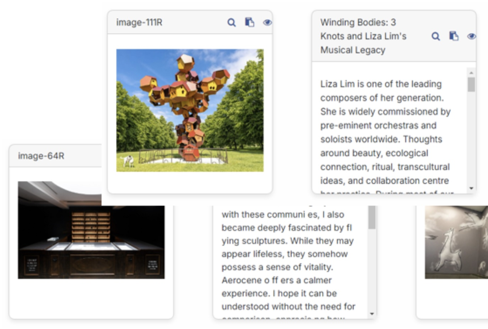
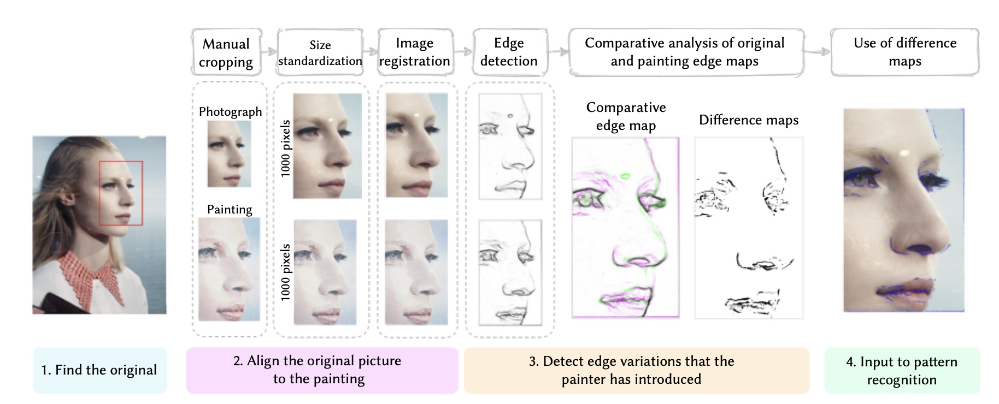
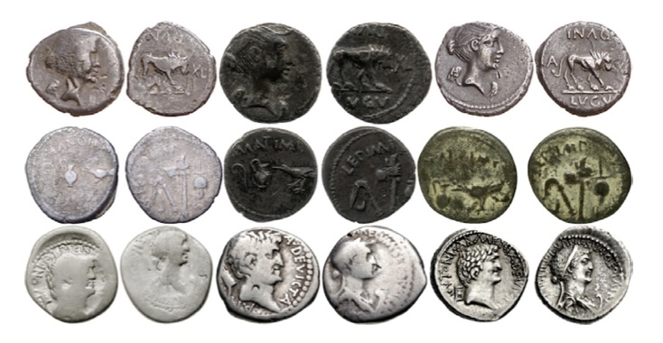
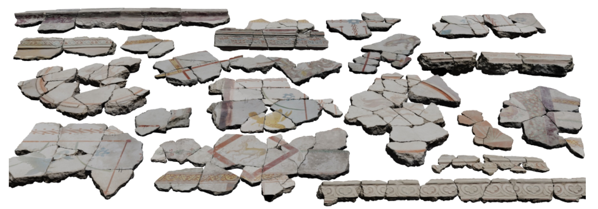

I am an Associate Professor of Computer Science at the University of Milan (Department of Historical Studies). My research bridges Computer Vision, Machine Learning, and Pattern Recognition with the domains of Cultural Heritage and Fine Arts.
I am particularly passionate about Image and Scene Understanding, driven by the unique challenges posed by artistic imagery, such as high levels of abstraction, stylistic variations, and the complex semantic gap between visual content and meaning. My work focuses on developing AI techniques for tasks where data is scarce, fragmented, or highly domain-specific, such as the digital restoration of frescoes, analyzing artistic techniques in paintings, and visual analysis of ancient coins. Previously, I held positions at Ca’ Foscari University of Venice and University of Milano-Bicocca, and conducted visiting research at Boğaziçi University in Turkey.
Research Focus & Selected Works
A selection of projects highlighting my core research themes.

AI-Based Visual Analysis for Artistic Research
We aim to extend artistic research methodologies by integrating computer vision techniques with knowledge graph-based semantic inference within the WP3 of the EAR project.

Computational Analysis of Artistic Creation Processes
Developing a computational framework to deconstruct both the artistic method of figurative painters and the constructed meaning of their paintings.

Computational Numismatics & Visual Analysis
We are establishing a computational framework to address the unique challenges of ancient numismatics. Our work targets visual data heavily affected by centuries of degradation and the inherent variability of manual manufacturing.
Our research specifically focuses on:
- Designing robust recognition algorithms to handle high degradation factors such as surface wear, corrosion (patina), and fractures,
- Computational modeling of stylistic variations resulting from the manual production process (hand-carved dies),
- Die analysis and fine-grained classification to distinguish subtle differences between coin types and individual dies.

Reconstruction and Digital Restoration of Fragmented Artworks
Developing algorithms to reassemble fragmented fresco pieces automatically, such as those from Pompeii. We tackle the challenge of "heavy-tailed" distributions where fragments are severely damaged, eroded, or missing.
My research specifically focuses on:
- Extraction of effective descriptors for irregular and highly damaged fragments,
- Automatic puzzle-solving algorithms combined with human-in-the-loop strategies,
- Inpainting methodologies for the complete digital restoration of missing content.
News & Updates
- [01/2026] Serving as Organization Co-Chair for the 12th TC3 Workshop on Artificial Neural Networks in Pattern Recognition (ANNPR 2026).
- [12/2025] Joined the Local Organizing Committe of the 45ᵗʰ International Symposium on Archaeometry; managing the "Digital Tools for Archaeometry" session.
- [12/2025] Gave an invited talk titled Exploring Cultural Heritage through Computer Vision at the University of Turin.
- [10/2025] Area Chair at IEEE ICASSP 2026 .
- [09/2025] Co-Organizing FAPER workshop within ICIAP 2025 .
- [09/2025] Presented our paper titled "Solving Jigsaw Puzzles in the Wild: Human-Guided Reconstruction of Cultural Heritage Fragments" at the Computer Vision session of IEEE MLSP, both as a poster and an oral presentation.
- [08/2025] Co-Organizing the special session Applications of AI in the Analysis of Cultural and Artistic Heritage within MLSP 2025 .
- [06/2025] Area Chair at MLSP2025 .
- [05/2025] Area Chair at BMVC2025 .
- [04/2025] Senior Program Committee Member at ECAI2025 .
- [01/2025] Associate Editor at Journal of the Franklin Institute .
- [05/2024] Area Chair at BMVC2024 .
- [09/2024] Joined to University of Milan as an Associate professor.
- [05/2022] Joined to Ca Foscari University of Venice as an Assistant professor.
- [05/2018] Gave a seminar on Visual dictionaries and Semantic segmentation with DCNNs at Dokuz Eylül University, İzmir.
- [03/2018] Presented paper at the special session of SIU 2018.
- [01/2018] Gave a seminar at European Centre for Living Technology (ECLT), Venice.
- [11/2017] Gave a seminar at University Paris-Est Créteil (UPEC), France.
- [09/2017] Our paper is accepted to be published in JVCI!
- [09/2017] Presented our paper at MADiMa 2017.
- [03/2017] Moved to Milano to join IVL team!